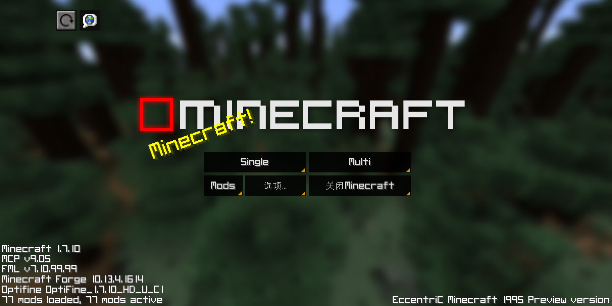

New EccentriC Minecraft 1995 Preview Version
New EccentriC Minecraft 1995(简称new95),是一个冒险主题整合,风格是从最早的"Endcraft Minecraft"传承过来的。
整合制作人：eirlo 下载

New EccentriC Minecraft 1995(简称new95),是一个冒险主题整合,风格是从最早的"Endcraft Minecraft"传承过来的。
整合制作人：eirlo 下载